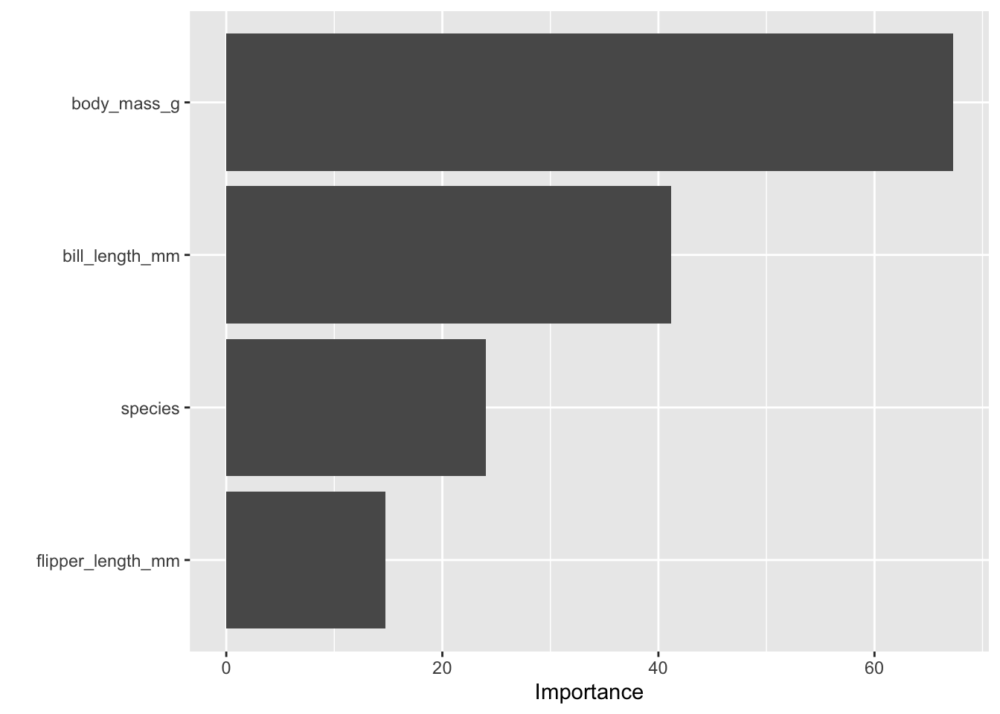

install.packages("tidymodels")Machine learning paradigms and workflows – Part 01
Overview of ML paradigms and workflows in R
Pre-lecture activities
Tip
In advance of class, please install
tidymodels- collection of packages for modeling and machine learning using tidyverse principles
You can do this by calling
And load the package using:
library(tidymodels)In addition, please
- Check out the Getting Started guide in
tidymodels
Lecture
Acknowledgements
Material for this lecture was borrowed and adopted from
Learning objectives
NoteLearning objectives
At the end of this lesson you will:
- State the differences between machine learning paradigms including supervised, unsupervised, semi-supervised, and reinforcement Learning
- Be familiar with logistic regression and random forests as two types of classification methods in supervised learning
- Recognize evaluation techniques
- Use
tidymodelsas collection of packages for modeling and machine learning usingtidyverseprinciples
Slides
Class activity
For the rest of the time in class, you and your team will work on the final project. Stephanie will walk around to answer questions and happy to help in any way!
Post-lecture
Additional practice
Here are some additional practice questions to help you think about the material discussed.
Question 1
Using penguins dataset discussed in class, we will practice more model building by experimenting with other features. In our first logistic regression, we only used two features (bill_length_mm and flipper_length_mm). In the second, we added body_mass_g and species.
Now, fit a third logistic regression model that uses only bill_length_mm and body_mass_g as input features (X). Compute the accuracy and Kappa metrics using metrics(). Compare the results to both of the previous logistic regression models. Which combination of predictors yields the best performance, and why might that be? The purpose of this question is to help build intuition about how including or excluding features affects predictive accuracy and model interpretability.
TipSolution
library(tidymodels)
library(palmerpenguins)
Attaching package: 'palmerpenguins'The following object is masked from 'package:modeldata':
penguinsThe following objects are masked from 'package:datasets':
penguins, penguins_rawpenguins <- na.omit(penguins)
# Logistic regression using only bill_length_mm and body_mass_g
logistic_model_q1 <-
logistic_reg() %>%
set_engine("glm") %>%
fit(sex ~ bill_length_mm + body_mass_g, data = penguins)
# Examine model coefficients
tidy(logistic_model_q1)# A tibble: 3 × 5
term estimate std.error statistic p.value
<chr> <dbl> <dbl> <dbl> <dbl>
1 (Intercept) -6.91 1.08 -6.41 1.42e-10
2 bill_length_mm 0.0611 0.0267 2.29 2.21e- 2
3 body_mass_g 0.00102 0.000198 5.14 2.77e- 7# Make predictions
logistic_preds_q1 <- predict(logistic_model_q1, penguins) %>%
bind_cols(penguins)
# Evaluate model performance
logistic_preds_q1 %>%
metrics(truth = sex, estimate = .pred_class)# A tibble: 2 × 3
.metric .estimator .estimate
<chr> <chr> <dbl>
1 accuracy binary 0.625
2 kap binary 0.250We saw that flipper_length_mm was not an informative feature, but it seems like body_mass_g is an informative variable! When we drop uninformative features and add informative features to the model, the predictive accuracy improves. It also helps model interpretability because we are keeping only a minmial set of features in the model.
Question 2
In class, we compared logistic regression to random rorest models. We also computed the accuracy and Kappa for both the random forest and logistic regression models. Which performed better on this dataset? Why might the random forest outperform (or underperform) logistic regression here?
Tip
Use vip::vip(rf_fit) to visualize which features the random forest considered most important. If you do this, you will need to modify set_engine("ranger", importance = "impurity") to calculate importance
The purpose of this question is to compare model types and interpret variable importance in tree-based models.
TipSolution
library(vip)
Attaching package: 'vip'The following object is masked from 'package:utils':
vi# Logistic regression with multiple predictors
logistic_model_q2 <-
logistic_reg() %>%
set_engine("glm") %>%
fit(sex ~ bill_length_mm + flipper_length_mm + body_mass_g + species,
data = penguins)
# Random forest with same predictors
rf_spec_q2 <- rand_forest(mtry = 3) %>%
set_engine("ranger", importance = "impurity") %>%
set_mode("classification")
rf_fit_q2 <- rf_spec_q2 %>%
fit(sex ~ bill_length_mm + flipper_length_mm + body_mass_g + species,
data = penguins)
# Evaluate both models
logistic_preds_q2 <- predict(logistic_model_q2, penguins) %>%
bind_cols(penguins)
rf_preds_q2 <- predict(rf_fit_q2, penguins) %>%
bind_cols(penguins)
metrics(logistic_preds_q2, truth = sex, estimate = .pred_class)# A tibble: 2 × 3
.metric .estimator .estimate
<chr> <chr> <dbl>
1 accuracy binary 0.892
2 kap binary 0.784metrics(rf_preds_q2, truth = sex, estimate = .pred_class)# A tibble: 2 × 3
.metric .estimator .estimate
<chr> <chr> <dbl>
1 accuracy binary 0.958
2 kap binary 0.916# Visualize feature importance for random forest
vip(rf_fit_q2)
We see that random forest performed better than logistic regression. This is because random forest can model complex, non-linear decision boundaries, while logistic regression assumes a linear relationship between the features and the log-odds of the outcome.
Also random forest can help with overfitting. It creates an ensemble of multiple decision trees and averaging their predictions. Therefore, random forest is more robust and less prone to overfitting than a single decision tree.
It also provides a measure of which features are most important for making predictions, which can be useful for understanding the data.
Question 3
The random forest model was trained and evaluated on the entire dataset. That’s not ideal for assessing generalization of how well the model will perform on data it was not trained on.
Next, use initial_split() from rsample to create a training (80%) and testing (20%) dataset. Fit your random forest on the training data and compute metrics on the test data. Compare the test accuracy to the earlier “full dataset” accuracy. What does the difference tell you about potential overfitting? The purpose of this question is to practice a strategy that can improve the model-building workflow that we will learn about in our next lecture.
TipSolution
set.seed(123)
peng_split <- initial_split(penguins, prop = 0.8)
peng_train <- training(peng_split)
peng_test <- testing(peng_split)
# Reuse the same random forest specification
rf_spec_q3 <- rand_forest(mtry = 3) %>%
set_engine("ranger", importance = "impurity") %>%
set_mode("classification")
# Fit model on training data
rf_fit_q3 <- rf_spec_q3 %>%
fit(sex ~ bill_length_mm + flipper_length_mm + body_mass_g + species,
data = peng_train)
# Evaluate on test data
rf_preds_q3 <- predict(rf_fit_q3, peng_test) %>%
bind_cols(peng_test)
metrics_train <- predict(rf_fit_q3, peng_train) %>%
bind_cols(peng_train) %>%
metrics(truth = sex, estimate = .pred_class)
metrics_test <- rf_preds_q3 %>%
metrics(truth = sex, estimate = .pred_class)
metrics_train# A tibble: 2 × 3
.metric .estimator .estimate
<chr> <chr> <dbl>
1 accuracy binary 0.947
2 kap binary 0.895metrics_test# A tibble: 2 × 3
.metric .estimator .estimate
<chr> <chr> <dbl>
1 accuracy binary 0.881
2 kap binary 0.757The performance dropped in the test data, therefore we are potentially overfitting when we fit our models.